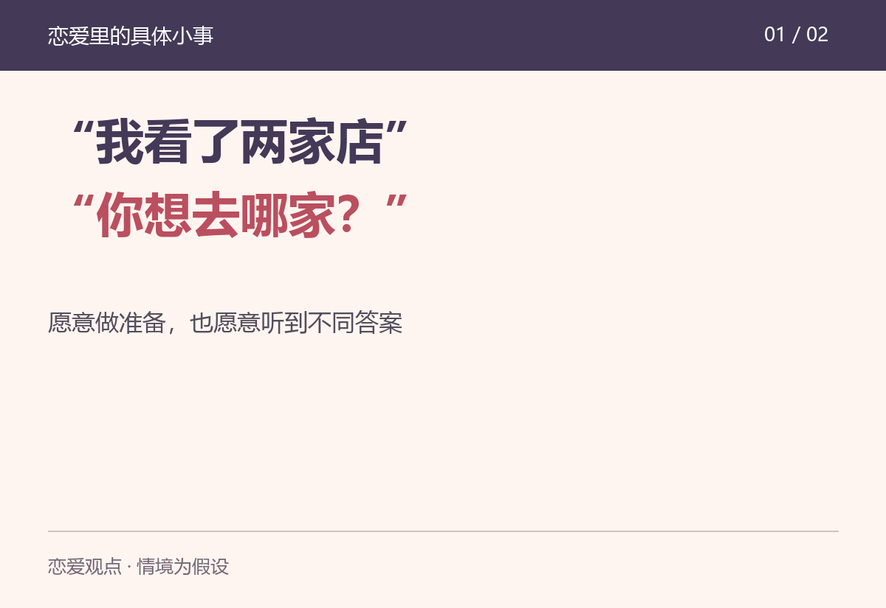
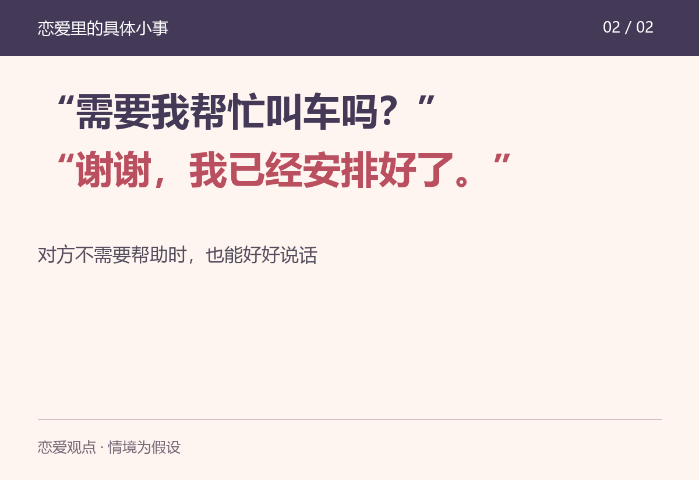

约会前，收到这样两种消息，你更喜欢哪一种？
“我看了两家店，一家安静，一家离你近。你想去哪家？”
“位置我订好了，你直接来。别又说这不吃、那不吃。”
这是两段假设对话。两个人都在主动安排约会，给人的感觉却可能很不一样。前一种邀请你参与，后一种在见面之前，就先把你的意见放到了麻烦的位置。
女生到底喜欢什么样的男生？如果一定要给我的看法，我会先看一个人怎样靠近对方。外形、谈吐、能力都可能让人产生兴趣，但一场约会能不能让人还想有下一次，要落到具体相处里看。
“随便，你定吧”很省事，却也可能把选地方、看路线、决定时间的事情全交给另一方。愿意做这些准备，本身就是一种认真。
但准备好一个方案，和要求对方必须接受，是两回事。比如，你找好了周末的展览，对方说最近更想去户外走走。你可以讲讲自己为什么想看，也可以另约时间看展，不必马上给她扣上“不珍惜我的心意”的帽子。
我更欣赏的主动，是把邀约推进一步，同时给对方表达意见的空间。问了意见，就准备接受一个与你预想不同的答案。
这并不要求男生负责全部安排。对方也应该提出想法、承担自己的部分。两个人都只等着被照顾，谁来安排都会累。

设想一个人平时很会说话，约好了周六见面，却到了时间才说今天没空；换一个不那么会制造惊喜的人，提前确认路线，临时有事也早早说明。你愿意继续和谁见面？
这里不需要假装所有人都会选同一个答案。我只是觉得，说到做到很值得加分。对方为见面腾出了时间，你也认真对待这段时间，才让人愿意继续安排下一次。
忙并不丢人，有变化也可以说。比如：“我今天得加班，来不及赴约。抱歉让你空出时间，你周日下午方便吗？我来重新安排。”比只丢下一句“最近忙”，更能让对方知道发生了什么。
当然，一次失约未必就能说明一个人的全部。需要看的，是说明之后有没有补上安排，还是每次都让另一个人等。
晚上聚会结束，问一句到家没有，可能是关心。可如果接下来要查同行的人、索要现场照片，甚至因为晚回几分钟就生气，接收消息的人还会不会想主动分享生活？
愿意提供帮助，很好；把接受帮助当成服从的证明，就容易让相处变得紧绷。对方说已经叫好车，可以回一句“好，路上注意安全”，不必继续坚持“我必须去接”。
两个人可以约定彼此舒服的联系习惯，也可以说自己什么时候会担心。我的观点是，约定要让双方都能表达，不能只有一方不断交代、另一方随时检查。
男生同样有这样的边界。也不该因为谈了恋爱，就被要求放弃朋友、随时汇报，或者用每一分钟的在线状态证明感情。

我觉得，一个很值得留意的时刻，是对方第一次没得到想要的回应。
你说今晚想自己待着，他可以有点失落，也可以问哪天再见。但如果立刻翻出自己送过的礼物、陪过的时间，要求你用答应来证明在乎，这些付出就变成了压力。
喜欢一个人，可以认真表达；听到明确拒绝后，也要允许关系停在对方愿意的位置。表现得体不会让谁自动获得恋爱资格，一个人也完全可以觉得你不错，却仍然没有恋爱的感觉。
所以，我不愿意把这篇写成“照着做，就能让女生喜欢你”的教程。长相、幽默感、生活节奏和彼此的感觉，都可能影响选择；女生之间也会有完全不同的偏好。
我更看好的，是一个人有自己的生活，愿意主动，也愿意兑现承诺；靠近别人时，仍然把对方当作有主意、有安排的人。这样的相处至少让双方有机会放松下来，看看是不是真的喜欢彼此。
如果只说一件事：一个男生做过什么，让你对他突然有了好感？也欢迎男生说说，怎样的回应会让你觉得，这场约会是两个人都在认真参与。
本文为恋爱观点讨论，对话与情境均为假设，不对应真实投稿。图卡原创绘制，内容经AI辅助整理与核对。